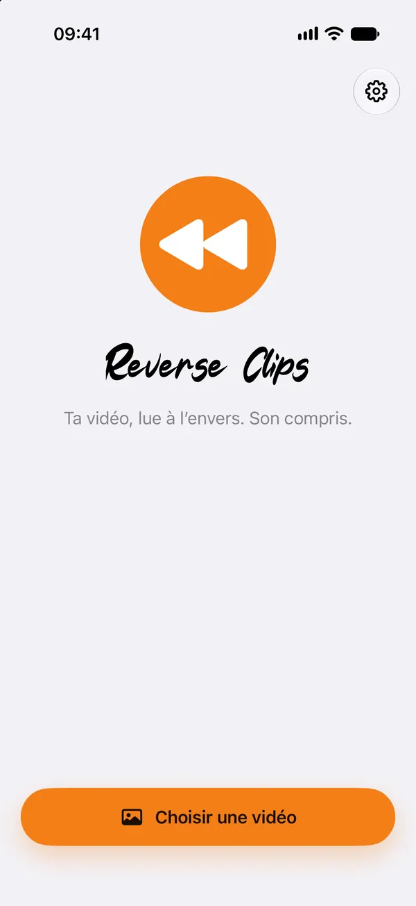
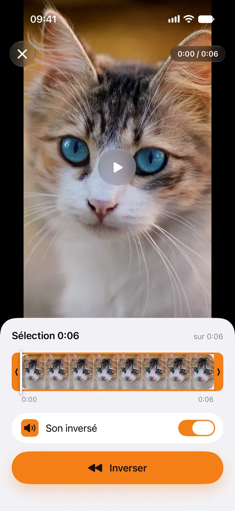
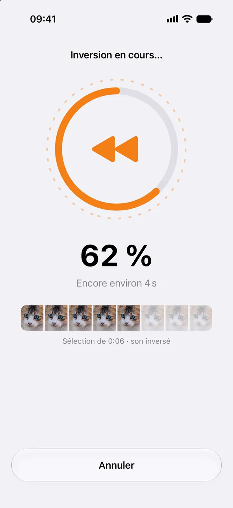
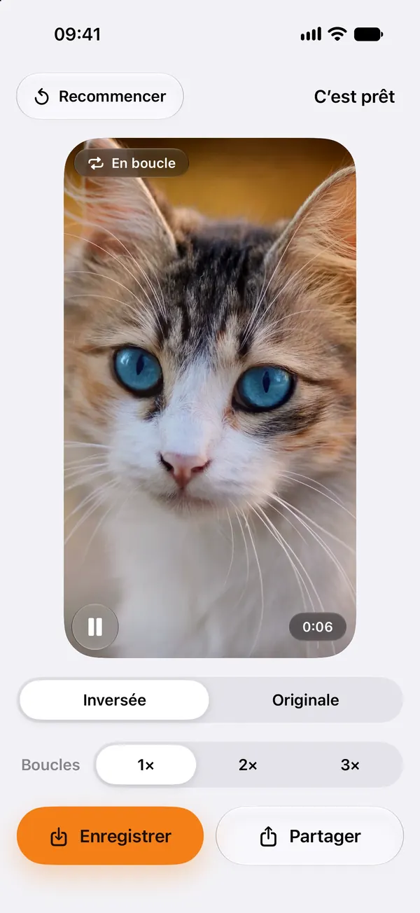

Reverse Clips
Ta vidéo, lue à l’envers. Son compris.
Reverse Clips lit à l’envers n’importe quelle vidéo de ta photothèque, en quelques touches. Découpe-la, mets-la en boucle, puis enregistre-la dans Photos ou partage-la tout de suite.
Télécharger sur l’App StorePour iPhone et iPad, iOS 26 ou plus récent. Gratuite avec des pubs.




Une vidéo ou une Live Photo
Choisis une vidéo ou une Live Photo dans ta photothèque, puis découpe le passage à inverser.
Son inversé
Le son est inversé lui aussi. Tu préfères le silence ? Coupe-le pour cette vidéo, ou par défaut dans les Réglages.
En boucle
Lis le résultat une, deux ou trois fois de suite, et compare-le avec l’original.
Enregistre ou partage
Enregistre la vidéo inversée dans Photos ou partage-la tout de suite.
Aucune limite de durée
Les longues vidéos sont inversées par morceaux, avec une vraie progression et le temps restant.
Depuis Photos et Raccourcis
Inverse directement depuis la feuille de partage de Photos, ou depuis l’app Raccourcis avec l’action « Inverser une vidéo ».
Ta vie privée d’abord
Reverse Clips demande seulement à ajouter des vidéos à ta photothèque, jamais à la lire en entier. Les vidéos sont inversées sur ton appareil.
Pour tout le monde
Dynamic Type, VoiceOver, modes clair et sombre.
Gratuite, ou sans pub
- Gratuit : toute l’app, avec une bannière sur l’accueil et une pub plein écran pendant l’inversion d’une vidéo.
- Premium : un achat unique via l’App Store, sans abonnement. Il supprime les pubs pour de bon, et permet aussi d’inverser directement depuis la feuille de partage et Raccourcis, sans ouvrir l’app.
- Tu l’as déjà acheté ? Il reste à toi : touche « Restaurer l’achat » dans les Réglages.